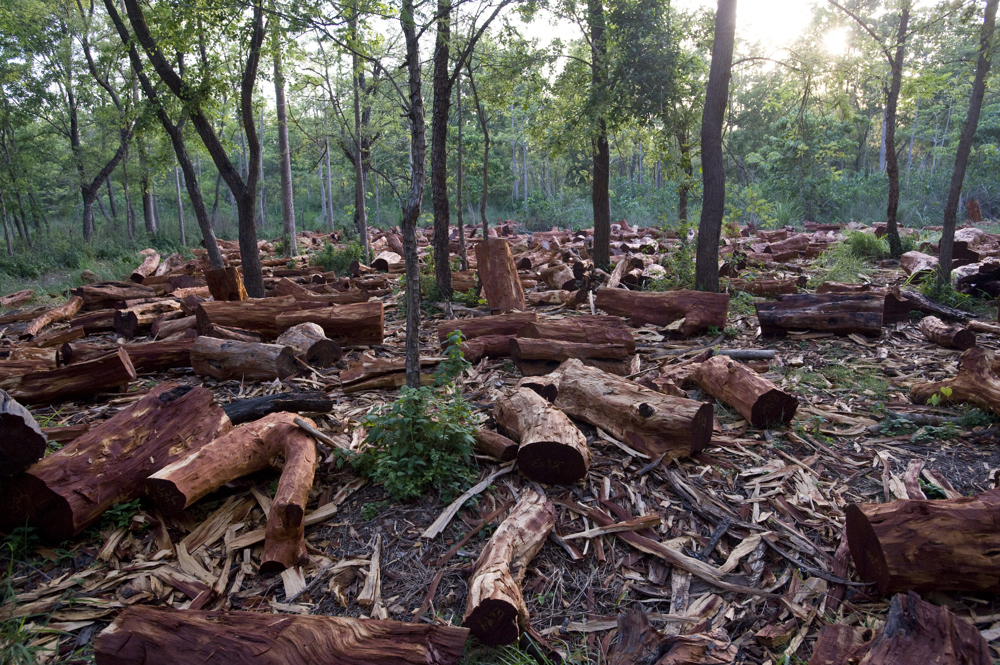

El planeta Tierra funciona como un sistema complejo en el que todos sus componentes están interconectados. Cuando las relaciones entre organismos vivos y recursos naturales se mantienen estables, se dice que existe equilibrio ecológico.
¿Qué es el equilibrio ecológico?
El equilibrio ecológico es el estado de estabilidad que existe en un ecosistema cuando los diferentes organismos y factores ambientales interactúan de manera armónica. Este equilibrio no significa que el ecosistema permanezca estático, sino que los cambios ocurran dentro de límites que permitan al ecosistema adaptarse.
Cómo se mantiene el equilibrio en los ecosistemas
Ciclos de nutrientes
Reciclaje de materia orgánica
Flujo de energía
Transferencia entre niveles
Relaciones entre especies
Regulación de poblaciones
Cambios naturales en los ecosistemas
Los ecosistemas siempre han experimentado cambios naturales como erupciones volcánicas, hurricanes, incendios naturales o variaciones climáticas. Aunque estos eventos pueden alterar temporalmente los ecosistemas, la naturaleza generalmente tiene la capacidad de recuperarse.
Actividades humanas que afectan el equilibrio
Deforestación
La tala masiva de bosques reduce la biodiversidad, destruye hábitats naturales y altera procesos ecológicos importantes como el ciclo del agua.
Contaminación ambiental
La liberación de sustancias contaminantes en el aire, el agua y el suelo afecta la salud de los ecosistemas.
Cambio climático
El aumento de gases de efecto invernadero está provocando el incremento de las temperaturas globales.
Consecuencias del desequilibrio ecológico
La importancia de la conservación ambiental
La protección de áreas naturales, el uso responsable de los recursos, la reducción de la contaminación y el desarrollo de tecnologías sostenibles son algunas de las estrategias que pueden ayudar a conservar el equilibrio ecológico.
Nuestro papel en la protección del planeta
Reducir el consumo de recursos, reciclar, evitar la contaminación y apoyar iniciativas de conservación son acciones que ayudan a proteger el planeta.